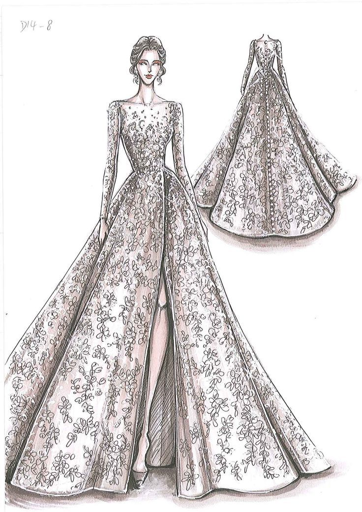
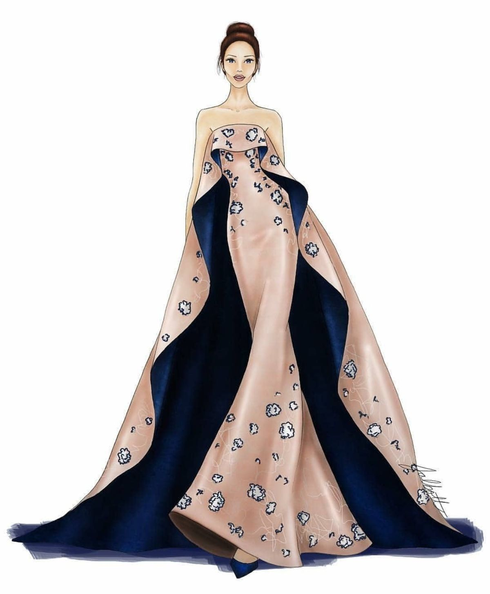

Apprentissages, Competences & Projets


En tant que débutante, j’ai commencé à développer des compétences solides que je continue à renforcer jour
après jour. Grâce à mes premiers projets et à ma curiosité, j’ai appris à travailler avec sérieux et
persévérance. Voici les domaines dans lesquels je me forme activement :
J’ai acquis les bases du HTML, du CSS et je commence à apprendre JavaScript pour créer des sites interactifs.
Je sais créer des pages web simples, organisées et structurées, en respectant un design clair et lisible.
J’utilise des outils comme VS Code et je m’initie à Git pour mieux organiser mon code.
Je fais preuve de rigueur, de patience et je suis toujours prête à apprendre de mes erreurs.
Grâce à ma double passion pour l’informatique et le stylisme, je desires développé des compétences variées
qui me permettent de travailler sur des projets à la fois techniques et créatifs. En informatique,
j'apprends à maîtriser les bases du développement web (HTML, CSS, JavaScript) et je m’initie au design d’interfaces
ainsi qu’à la programmation. Je suis capable de créer des sites web, responsives et clairs,
en mettant l’accent sur l’expérience utilisateur.
Côté stylisme, je sais associer les couleurs, imaginer des tenues originales, et concevoir des croquis de mode. J’ai un bon œil pour l’harmonie visuelle et je m’inspire des tendances actuelles tout en gardant une touche personnelle.
 J’aime travailler de façon autonome, mais je sais aussi demander de l’aide ou collaborer quand c’est nécessaire car, je suis aussi à l’aise dans le travail en équipe, je sais écouter, m’adapter et toujours apprendre de nouvelles choses pour m’améliorer.
euh maintenant ! vous savez quoi ? je vais vous parler des mes projets, c'est super interessant.
– Site web du Collège Sainte Trinité
Dans le cadre de ma formation, j’ai réalisé un site web pour un établissement
scolaire fictif : le Collège Sainte Trinité. Ce projet m’a permis de mettre en
pratique mes premières compétences en développement web tout en répondant à un besoin
concret : faciliter la communication entre l’école et les parents d’élèves.
Le site propose une page d’accueil claire, un espace parents avec des actualités
générales et personnalisées, un formulaire de contact en cas de problème, ainsi qu’un
système de notifications simples. J’ai également intégré une page présentant
l’historique du collège et ses innovations, pour mettre en valeur l’identité de
l’établissement.


Ce projet m’a appris à organiser mon travail, à structurer un site statique en HTML et
CSS, et à commencer à utiliser JavaScript pour ajouter de l’interactivité.
Il représente une étape importante dans mon apprentissage, et je suis fière du chemin
parcouru. une fois le site heberger , je vous inviterai a le consulter. Hormis ca , il existe
des nombreux projet que j'aimerais mettre en pratique une fois que j'aurais appris des langages assez
dynamique comme(php, java script, python,...) et l'utilisation d'une base de donnée. comme:
Un site web pour une agence de transports, un sit web pour des entreprise,...